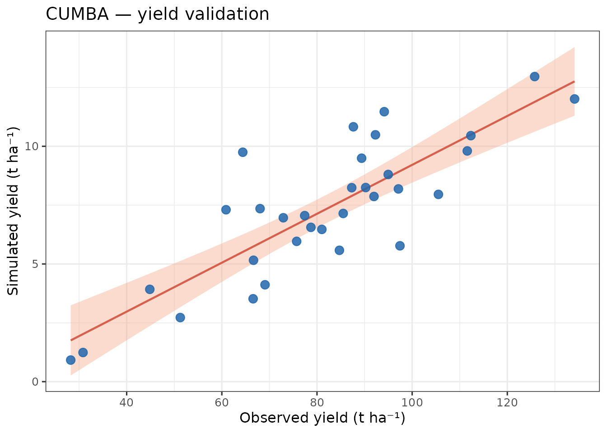
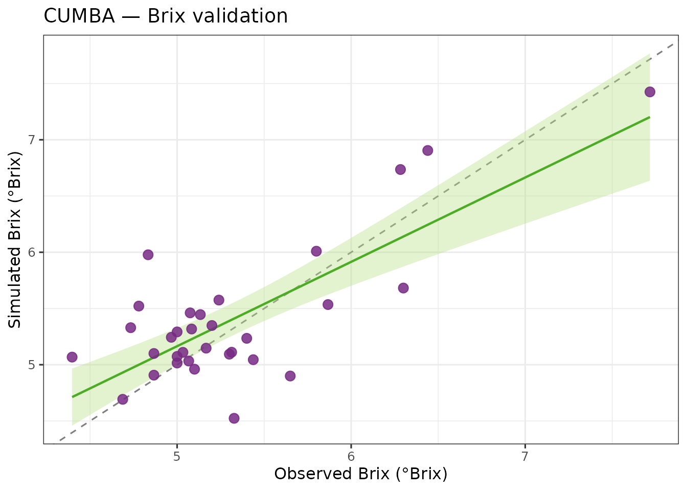

Run an experiment with cumba_experiment()
Source:vignettes/cumba-experiment.Rmd
cumba-experiment.RmdWhen to use cumba_experiment()
Use cumba_experiment() when you have observed
experiments with their actual irrigation schedule and you want
CUMBA to reproduce them. This is the function used during model
calibration against yield/Brix observations.
The companion function cumba_scenario() is meant for
what-if deficit-irrigation studies, where irrigation is
triggered automatically based on phase-specific water-stress
thresholds.
Required inputs
| Argument | Description |
|---|---|
weather |
Daily data frame: Site, Tx,
Tn, P, DATE, Lat (if
estimateRad = TRUE) or Rad
|
param |
Named list-of-lists (e.g. cumbaParameters) or plain
numeric data frame |
irrigation_df |
Data frame with ID, Site,
YEAR, DATE, WVOL (mm) |
estimateRad |
TRUE → Hargreaves–Samani from Lat;
FALSE → use Rad column |
estimateET0 |
TRUE → FAO-56 Penman–Monteith; FALSE → use
ET0 column |
irrigationEfficiency |
Fraction of applied water reaching the root zone (default
0.9) |
fullOut |
FALSE → short output; TRUE → all internal
state variables |
A complete walkthrough on tomatoFoggia
library(cumba)
library(dplyr)
library(ggplot2)
data(tomatoFoggia)
data(cumbaParameters)
out <- cumba_experiment(
weather = tomatoFoggia$weather,
param = cumbaParameters,
irrigation_df = tomatoFoggia$irrigation,
estimateRad = TRUE,
estimateET0 = TRUE,
irrigationEfficiency = 0.9,
fullOut = FALSE
)
head(out)
#> site year experiment doy p irrigation stage swc yield
#> 1 Foggia 2005 1 118 0 27.9 post-transplanting 30.00000 0
#> 2 Foggia 2005 1 119 0 0.0 post-transplanting 29.78431 0
#> 3 Foggia 2005 1 120 0 0.0 post-transplanting 29.60447 0
#> 4 Foggia 2005 1 121 0 0.0 post-transplanting 29.40442 0
#> 5 Foggia 2005 1 122 0 0.0 post-transplanting 29.28403 0
#> 6 Foggia 2005 1 123 0 0.0 post-transplanting 29.23520 0
#> brix
#> 1 0
#> 2 0
#> 3 0
#> 4 0
#> 5 0
#> 6 0Harvest-day values
Each simulation ends when the crop cycle is complete. The last row for each (site × year × experiment) combination carries the harvest-day yield and Brix:
harvest <- out |>
group_by(site, year, experiment) |>
slice_tail(n = 1) |>
ungroup() |>
select(site, year, experiment, yield, brix)
harvest
#> # A tibble: 32 × 5
#> site year experiment yield brix
#> <chr> <dbl> <dbl> <dbl> <dbl>
#> 1 Foggia 2005 1 41.2 6.01
#> 2 Foggia 2005 2 82.4 5.35
#> 3 Foggia 2005 3 108. 5.07
#> 4 Foggia 2005 4 64.7 5.29
#> 5 Foggia 2005 5 70.5 5.15
#> 6 Foggia 2005 6 94.9 5.09
#> 7 Foggia 2006 7 35.2 5.98
#> 8 Foggia 2006 8 65.6 5.24
#> 9 Foggia 2006 9 81.9 5.33
#> 10 Foggia 2006 10 55.8 5.23
#> # ℹ 22 more rowsCompare with observations
tomatoFoggia$production contains observed
yield_ref (t ha⁻¹) and brix_ref (°Brix). The
yield column in the short output is in q
ha⁻¹, so divide by 10 to convert to t ha⁻¹:
production <- tomatoFoggia$production
cmp <- harvest |>
mutate(experiment = as.integer(experiment)) |>
inner_join(production, by = c("experiment" = "ID")) |>
mutate(yield_t = yield / 10)
ggplot(cmp, aes(yield_ref, yield_t)) +
geom_abline(slope = 1, intercept = 0, linetype = 2, colour = "grey50") +
geom_smooth(method = "lm", se = TRUE, colour = "#d6604d",
fill = "#f4a582", linewidth = 0.8) +
geom_point(size = 3, colour = "#2166ac", alpha = 0.85) +
labs(x = "Observed yield (t ha⁻¹)",
y = "Simulated yield (t ha⁻¹)",
title = "CUMBA — yield validation") +
theme_bw(base_size = 12)
ggplot(cmp, aes(brix_ref, brix)) +
geom_abline(slope = 1, intercept = 0, linetype = 2, colour = "grey50") +
geom_smooth(method = "lm", se = TRUE, colour = "#4dac26",
fill = "#b8e186", linewidth = 0.8) +
geom_point(size = 3, colour = "#762a83", alpha = 0.85) +
labs(x = "Observed Brix (°Brix)",
y = "Simulated Brix (°Brix)",
title = "CUMBA — Brix validation") +
theme_bw(base_size = 12)
Full output for diagnostics
Pass fullOut = TRUE to access every internal state
variable (GDD, Kc, soil water per layer, carbon pools, flowering state,
etc.):
out_full <- cumba_experiment(
weather = tomatoFoggia$weather,
param = cumbaParameters,
irrigation_df = tomatoFoggia$irrigation,
estimateRad = TRUE,
estimateET0 = TRUE,
fullOut = TRUE
)
names(out_full)Notes
- Cardinal temperatures in
parammust satisfyTmax > Topt > Tbaseand soil parameters must satisfyFieldCapacity > WiltingPoint; otherwise the function stops with a descriptive error. - Run-time scales linearly with the number of (site × year × ID) combinations: each is simulated independently day-by-day.
- The
experimentcolumn in the output is a character; convert withas.integer()before joining with integer-keyed observation tables.